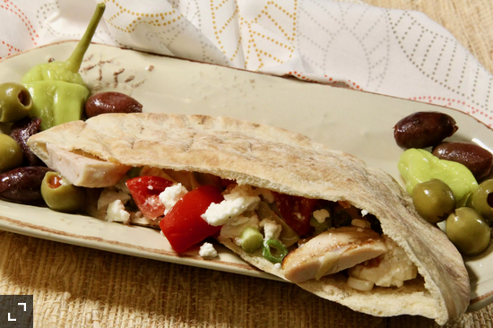

Main Page
Mediterranean Chicken Pitas

A perfect way to use leftover chicken breasts in
these amazing Mediterranean-style pita sandwiches,
served with artichokes and feta cheese.
Very tasty and easy! I felt the mixture a little dry for
our taste, so I added a TBS of olive oil. I also added
halved cherry tomatoes, as illustrated in the picture.
It'll be part of my regular lunch rotation. Thanks for
the recipe!
Ingredients
- 1 cup marinated artichoke hearts, drained and
chopped
- 1/2 cup crumbled feta cheese
- 1/2 cup thinly sliced green onions
- 1 tablespoon lemon juice
- 1 teaspoon salt
- 1/2 teaspoon ground black pepper
- 2 (6 inch) whole wheat pita breads, split and
toasted
- 4 ounces roasted chicken breast, sliced
Steps to Make the Goody Goods
- Combine artichokes with feta cheese, green onions,
lemon juice, salt, and pepper in a bowl. Spoon into
pita halves. Divide chicken slices and add to pita
pockets.